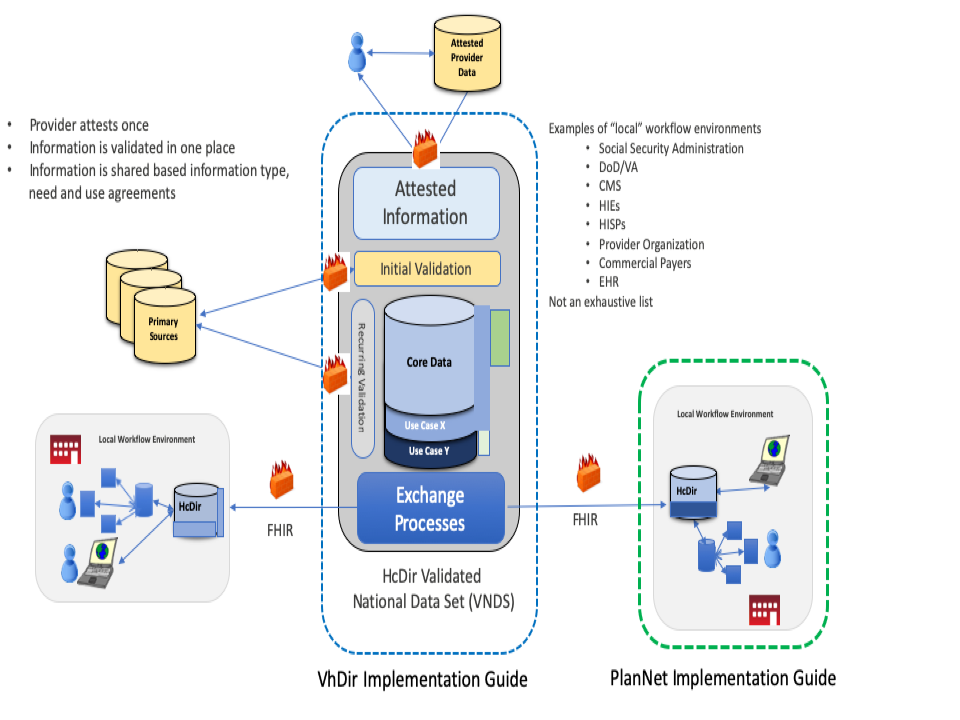
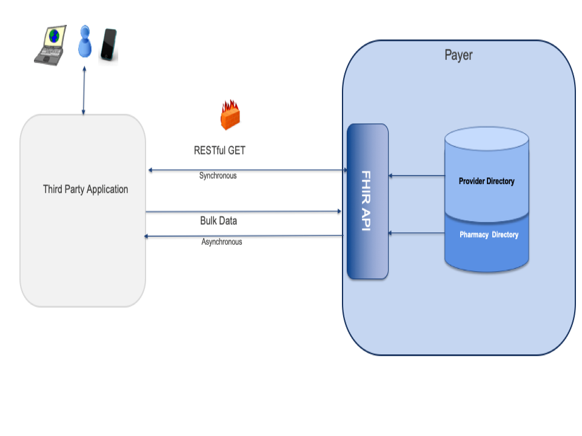
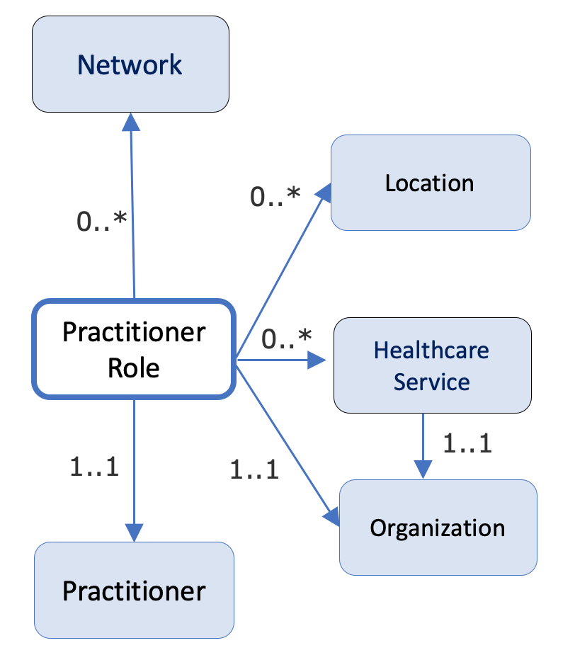
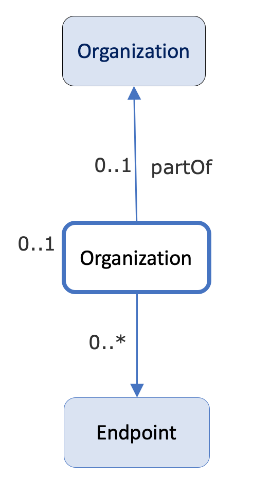
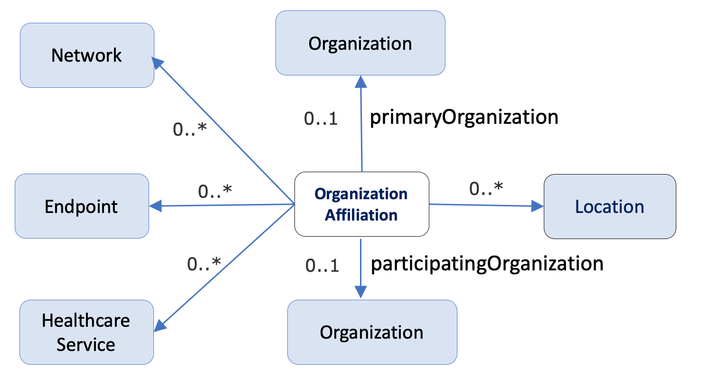
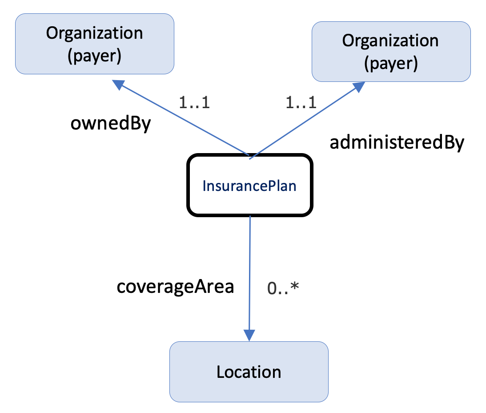
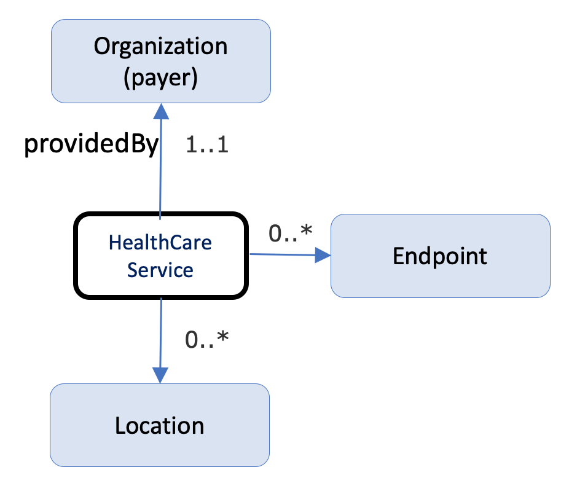
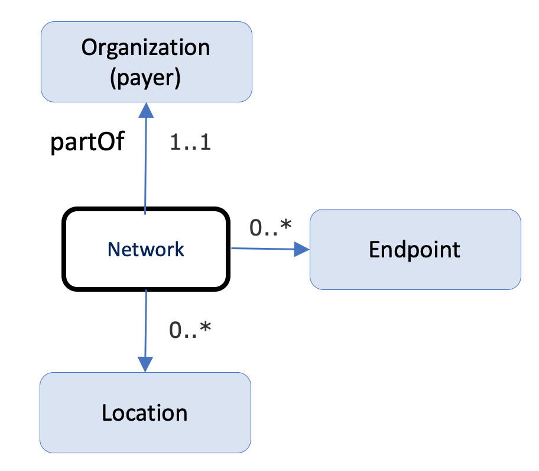

This implementation guide defines a FHIR interface to a health insurers insurance plans, their associated networks, and the organizationa and providers that participate in these networks. Publication of this data through a standard FHIR-based API will enable third parties to develop applications through which consumers and providers canquery the contents of a payers network to identify providers that can address their health care needs. ALthough there are multiple types and sources of providers directories, including provider organizations (i.e., a hospital listing all its physicians), government (i.e., listing of providers in Medicare), payers (i.e., a health plan's provider network), and third-party entities (such as vendors that maintain provider directories), the focus of this implementation guide in on Payer Provider Directories.
The PDEX Payer Network (or Plan-Net) Implementation Guide is based on the Validated Healthcare Directory Implementation Guide (VHDir IG), an international standard. The VHDir IG is based on FHIR Version 4.0. It was developed in cooperation with the Office of the National Coordinator for Health Information Technology (ONC) and Federal Health Architecture (FHA) with guidance from HL7 International, the Patient Administration Workgroup, and the HL7 US Realm Steering Committee. As shown in the diagram below, it describes the architectural considerations for attesting to, validating, and exchanging data from a central source of validated provider data as part of a Validated Healthcare Directory or VHDir, as well as a RESTful FHIR API for accessing data from a VHDir. The VHDir authors developed the IG to support a conceptual, centralized, national source of healthcare data that would be used across multiple use cases.
The use of VhDir as the conceptual base for the PDEX Payer Network Implementation Guide, including reuse by reference of most of the extensions defined there, is intended to protect implementers of the Plan-Net IG from rework/remapping when the VHDir concept reaches implementation, and becomes a source of data for the PDEX Payer Network. The primary changes from the VHDir IG are to:
The diagram below depicts the scope of this implementation guide (IG). The IG defines the API that exposes a payer’s provider network (including pharmacy locations where appropriate) for access by a consumer or provider application. This is a query only API (GET) and does not support PUT or POST.
This implementation guide was written for a US audience and profiles resources from the R4 version of the US Core IG, where available (Practitioner, PractitionerRole, Organization and Location), and otherwise from R4 (OrganizationAffiliation, HealthCareService, Endpoint). Alignment with VhDir is maintained by using extensions from VhDir where possible.
Provider directories play a critical role in enabling identification of individual providers and provider organizations, as well as characteristics about them. Provider directories support a variety of use cases, including:
ALl use cases involve an application or consumer client querying a service provided by a payer.
NPI = 1237551547 GET https://davinci-plan-net-ri.logicahealth.org/fhir/Practitioner?identifier=1237551547
https://davinci-plan-net-ri.logicahealth.org/fhir/PractitionerRole?practitioner.identifier=1235733566
Note: the following diagrams provide a high-level view of the relationships between resources used in this IG. They do not necessarily reflect all of the relationships/references between resources.
A practitioner is a person who is directly or indirectly involved in the provisioning of healthcare.
PractitionerRole describes the role a practitioner plays at an organization, including the services they provide, the location(s) where they work, and their availability, electronic endpoints, and other relevant information.
Figure 1: Practitioner and PractionerRole

An organization is a formal or informal grouping of people or organizations with a common purpose, such as a company, institution, corporation, community group, or healthcare practice. The Organization resource often exists as a hierarchy of organization resources, using the part-of property to provide the association of the child to its parent organization. This organizational hierarchy helps communicate the conceptual structure, whereas the Location resource provides the physical representation of the hierarchy. The linkage between Organization and Location is from each point in the location hierarchy to the appropriate level in the Organization hierarchy. These links don't all have to be to the top level Organization.
In the Plan-Net context, organizations can represent payers, pharmacy companies, and various types of provider organizations.
Figure 2: Organization

Similar to PractitionerRole, OrganizationAffiliation describes relationships between organizations. For example: 1) the relationship between an organization and an association it is a member of (e.g. hospitals in a hospital association), 2) an organization that provides services to another organization, such as an organization contracted to provide mental health care for another organization as part of a healthcare provider insurance network, and 3) distinct organizations forming a partnership to provide services (e.g. a cancer center).
Figure 3: OrganizationAffiliation

InsurancePlan describes a health insurance offering comprised of a list of covered benefits (i.e. the product), costs associated with those benefits (i.e. the plan), and additional information about the offering, such as who it is owned and administered by, a coverage area, contact information, etc.
Figure 4: InsurancePlan

The HealthcareService resource is used to describe a single healthcare service or category of services that are provided by an organization at a location. The location of the services could be virtual, as with telemedicine services.
Figure 5: Healthcare Service
An endpoint describes the technical details of a location that can be connected to for the delivery/retrieval of information. Sufficient information is required to ensure that a connection can be made securely, and appropriate data transmitted as defined by the endpoint owner.
A Location is the physical place where healthcare services are provided, practitioners are employed, organizations are based, etc. Locations can range in scope from a room in a building to a geographic region/area.
A network is a group of practitioners and organizations that provide healthcare services for individuals enrolled in a health insurance product/plan (typically on behalf of a payer).
Figure 6: Network
Access to the plan-net service should not require authentication, and the server should not maintain any records that could associate the consumer with the entities that were queried.
A conformant plan-net service SHALL NOT require a directory mobile application to send consumer identifying information in order to query content.
A directory mobile application SHALL NOT send consumer identifiable information when querying a formulary service.
When querying and reading the Plan-Net Profiles defined in this IG, Must Support on any profile data element SHALL be interpreted as follows:
Any actor acting as a Health Plan API actor in this IG SHALL:
| Name | |
|---|---|
| Dan Chaput | daniel.chaput@hhs.gov |
| Alex Kontur | alex.kontur@hhs.gov |
| Brian Postlethwaite | brian.postlethwaite@health.telstra.com |
| Bob Dieterle | rdieterle@enablecare.us |